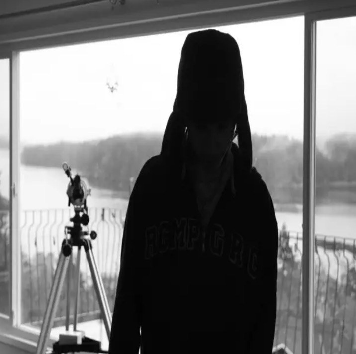

Ball is already out, so this is a re-push campaign. The goal is to get new ears on it over the next two weeks, mainly through Instagram and TikTok, and send them to Spotify.
Download the full plan (PDF)
The silhouette against the bright window is strong. We shrank it down to the size people see while scrolling, and the shape still reads clearly. It feels mysterious and fits the underground lane.
Since the song is out, keep the cover as is. Your promo graphics lift the shadows, clean the smudge, and put 2MCH and Ball front and center so every post builds your name.
Upload covers at 3000 by 3000 pixels, and add your name somewhere small so the art works on its own.
Tap download to save each one to your phone.
Post at the times your followers are most active. Instagram shows this under Insights. If you're not sure, evenings between 6 and 9 are a good start.
| Reintroduce itPost the feed graphic. Pin it to the top of your profile and put the Spotify link in your bio. | |
| Story pushPost the story graphic with a link sticker to Ball on Spotify. Save it to a Highlight called Ball. | |
| The hook clipFilm a 10 to 15 second clip with the hardest part of Ball playing: you in the car, walking, or just the cover with the audio. Post it as a Reel and a TikTok. | |
| Find your peoplePost the fans-of graphic. Then spend 15 minutes leaving real comments on posts from fan pages and artists in the pradabagshawty and xaviersobased scene. No spam, no links in comments. | |
| Spotify CanvasIn Spotify for Artists, add a 3 to 8 second looping video to Ball. Even a slow zoom on the cover works. It makes the song stand out in the app. | |
| Playlists and repostsSend Ball to 5 small underground playlist curators and SoundCloud repost channels in your lane. Short, personal messages work best. | |
| Thank the listenersRepost anyone who shared it and reply to every comment and DM. | |
| New angle on the hookPost the hook again with a different visual. Try a reaction, a lyric on screen, or a clip of you making the beat. | |
| Let others use itAsk followers to use Ball in their own Reels and TikToks, and repost the best ones. | |
| Check the numbersLook at Spotify for Artists and Instagram Insights. Whatever got the most saves and shares, do more of that next week. |
ball. still one of mine. link in bio
if you slept on this, here's your chance
this part right here 🔊 ball out now
for the ones who know. 2mch, ball, on spotify
still running this back. ball
use ball in your next post and tag me. reposting my favorites
appreciate everybody who ran ball up these last two weeks. more coming
Use 3 to 5 per post: #undergroundrap #undergroundtrap #trapmusic #newmusic #sobased
We listened to Ball and it's good to go. No changes needed.
This is how labels keep an artist moving between drops. Do the same and every release starts stronger than the last.